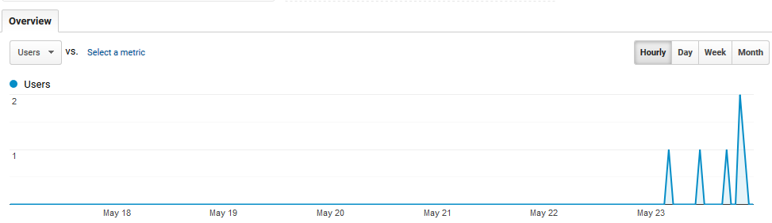
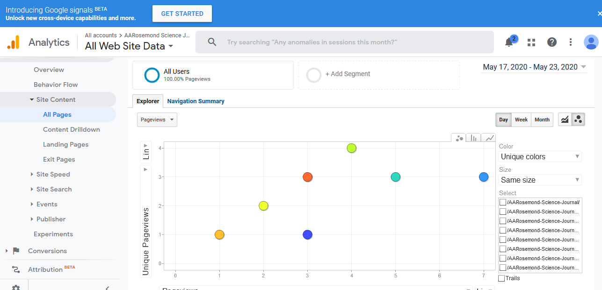
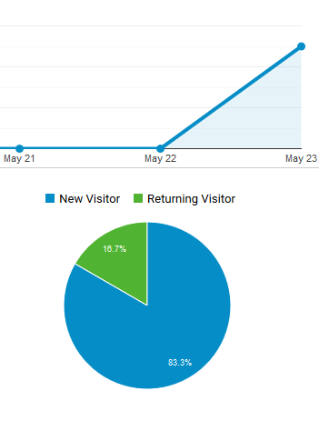

Adding Analytics: AARosemond's Blog
This is the first post on my exploration and experimentation with analytics, using AARosemond’s Science Journal. I don’t have much in the way of data yet (a function of the few who’ve visited the site and how little time I’ve had analytics attached) but I do have a sound foundation for future posts. So this post will be focused on pre-evaluation, initial steps and early observations.
Pre-evaluation
 AARosemond's Science Journal index/landing page.
AARosemond's Science Journal index/landing page.
AARosemond’s Science Journal is a site designed to explore and experiment with web development. It will record my reaction to design, accessibility, analytics and related subjects, as well as display my hopefully increasing skill at generating and disseminating compelling content. As such, I expect analytics to help test my assumptions about the site, including:
- Most visitors to the site will come as a result of links I attach to Github, emails, resumes and my LinkedIn profile, to demonstrate my increasing skill in web development. I am not counting on other websites to significantly refer others to the site.
- I imagine my most popular pages will be blog posts where I analyze other sites. For example, Post 1 is an overall design analysis of Seattle University’s Albers School of Business and Economics page. It is likely to gain some traffic for its look at a moderately popular web destination
- Generally, the flow and behavior I expect to see from the sites visitors would be to land first on the index.html page (the most likely page I would refer visitors to) with follow on visits to the top most post in the dropdown (currently Post 1). There is no call to action, other than to visit posts, so I expect visitors to stay for a short while until curiosity is satisfied.
AARosemond’s Science Journal was designed to display more than the just a blog. Since many of those features are little more than aspirational at this point, I am sure there is much more complexity ahead as the site develops.
Adding Analytics
Adding Google Analytics was relatively straightforward. I created an google email address for correspondence and used its protocols to get a global site tag from Google Analytics. I hand coded the site tag script into every blog page. It took more than 24hrs to get any movement recorded, leaving me with the lesson learned: start early, for best results. As I write this post, I realize that I should have included the script to the about page (and probably should update the page, while I am at it).
Preliminary Findings
To get traffic going to the site, I sent a few text and email messages to contacts, explaining the initiative and asking for them to visit. In this, my pre-evaluation statement bears out.
 AARosemond's Science Journal Visitors Over 24 Hours.It feels like my contacts did exactly as I asked. The average time on each page was 15 seconds, with the most page views on the index page (as I guessed on my pre-eval page) and descending as post numbers increase. This last observation bears further review: Six posts exist, and I currently have them listed on the blog drop down in ascending order. It is likely that each visitor landed on the index page via the link I sent out and visited the posts in order. One course of action could be to reverse the order of posting, so that the most current is the first one visited, with hopes this will increase the page views overall.
 AARosemond's Science Journal Unique Page Views over 24 Hours.15% of users returned to the site after the initial visit. If that were more than 1 user, I could say there was hope for repeat viewership. Again, I’ll be on the looking out for trends.
 AARosemond's Science Journal 15% returning visitor rate.